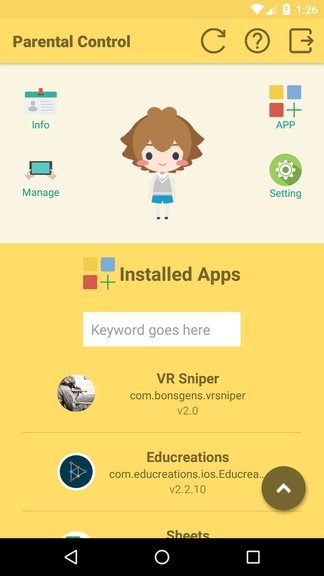

iClass Android Mobile Device Management (MDM) System was the main project in which I researched, designed and developed a server backend, a simple frontend webpage and an Android device policy controller app during my internship period in ITWakes Ltd. The system is now under further polishing and development by my ex-colleagues (many thanks to them!) and will be released soon.
System features
Achievement
Technology Stack
{
"errno": 0,
"msg": "Success!",
"data": "{"id":1, "text":"test"}"
}
iClass iPad Parental Control System (PCS) is a companion app for the iPad MDM system of ITWakes Ltd. This was a side-projectz in which I worked closely with the backend engineer of the iPad MDM system, during my internship period at ITWakes Ltd.

The app is now on Google Play Store
System features
Technology Stack
The app works with a backend API for sending requests and retrieving data. Self-implemented a JSONDownloader class for loading JSON data by sending requests to the backend. Used the external Glide library for image caching, resizing and reshaping in the Installed App fragment.
Technology Stack
The project mainly adopts a MTV model, which is employed in the Django framework. All model (M) class logic is separated from the view (V) classes which mainly serve as API endpoints and the templates (T) which mainly defines the layout of the webpage frontends.
A server response standard is employed in the backend development to facilitate efficient in end-to-end communicatino within the system.
Source code is available on Github
See the Pen React Timer by Terence Chow (@tboosters) on CodePen.
Piece difference + Corner Occupation + Corner Closeness + Mobility
with higher weighting on corner occupation and mobility.